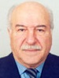

Азнаурян Арташес.Род: Азнауряны (1)
Продолжительность жизни: 84
Место жительства: Ереван
Советский армянский патоморфолог; доктор медицинских наук, профессор, действительный член АФ РАЕН (2003), действительный член Академии медицинских наук Армении; министр здравоохранения Армянской ССР (1989-1990).
Награды и звания:
-премия Ленинского комсомола Армении;
-юбилейная медаль «За доблестный труд. В ознаменование 100-летия со дня рождения Владимира Ильича Ленина» (1970);
-медаль Мхитара Гераци;
-почётный доктор Российской Академии медицинских наук;
-почётный работник высшей школы.
Отец: Азнаурян Вартан
Мать: Азнаурьян Анаида Петросовна
Сестра: Ватулян (Азнаурян) Тамара Вартановна
Сестра: Азнаурян Ася Вартановна
Брат: Азнаурян Захар Вартанович
Брат: Азнаурян Овнан Вартанович
Жена: Алла
Сын: Азнаурян Вардан Арташесович
Сын: Азнаурян Смбат Арташесович
Родился: 19.09.1938, Батуми.
Женился.
Родился сын: Азнаурян Вардан Арташесович, 23.08.1965, Ереван.
Родился сын: Азнаурян Смбат Арташесович, 22.04.1969, Ереван.
Умер: 18.11.2022, Ереван.